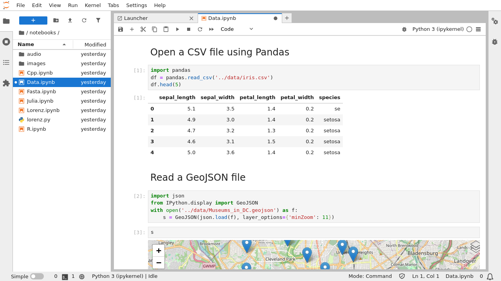

Notebooks#
Jupyter notebooks are documents that combine live runnable code with narrative text (Markdown), equations (LaTeX), images, interactive visualizations and other rich output:
Jupyter notebooks (.ipynb files) are fully supported in JupyterLab. The notebook document format used in JupyterLab is the same as in the classic Jupyter Notebook. Your existing notebooks should open correctly in JupyterLab. If they don’t, please open an issue on our GitHub issues page.
Create a notebook by clicking the + button in the file browser and
then selecting a kernel in the new Launcher tab:
A new file is created with a default name. Rename a file by right-clicking on its name in the file browser and selecting “Rename” from the context menu:
The user interface for notebooks in JupyterLab closely follows that of the classic Jupyter Notebook. The keyboard shortcuts of the classic Notebook continue to work (with command and edit mode). However, a number of new things are possible with notebooks in JupyterLab.
Drag and drop cells to rearrange your notebook:
Drag cells between notebooks to quickly copy content:
Create multiple synchronized views of a single notebook:
Collapse and expand code and output using the View menu or the blue collapser button on left of each cell:
Enable scrolling for long outputs by right-clicking on a cell and selecting “Enable Scrolling for Outputs”:
Create a new synchronized view of a cell’s output:
Tab completion (activated with the Tab key) can now include additional
information about the types of the matched items:
Note: IPython 6.3.1 has temporarily disabled type annotations.
To re-enable them, add c.Completer.use_jedi = True to an
ipython_config.py file.
The tooltip (activated with Shift Tab) contains additional
information about objects:
You can connect a code console to a notebook kernel to have a log of computations done in the kernel, in the order in which they were done. The attached code console also provides a place to interactively inspect kernel state without changing the notebook. Right-click on a notebook and select “New Console for Notebook”:
You can iterate through the kernel history in a document cell using Alt Up-Arrow and Alt Down-Arrow. To use this feature, enable kernel history access in the notebook settings.
Cell Toolbar#
In each cell, there is a toolbar that provides quick access to commonly-used functions, if there is enough room to display it on the first line.
If you would like to disable the cell toolbar, open the Settings Editor, choose the Cell Toolbar in the left panel, and uncheck “Show cell toolbar”.
Administrators can turn off the cell toolbar by disabling its extension, by running:
jupyter labextension disable @jupyterlab/cell-toolbar-extension
on the command line. Administrators can turn it back on by running:
jupyter labextension enable @jupyterlab/cell-toolbar-extension
Trust#
JavaScript and HTML in notebooks created on other machines are not trusted, which results in sanitization of HTML and interactive outputs not being displayed until the notebook is explicitly trusted.
The trust status of the active notebook is indicated by a shield icon in the
status bar; a checkmark () in the shield indicates a trusted
notebook while a cross () indicates an untrusted notebook.
To trust a notebook (and render any blocked outputs) use the Trust Notebook
command available in the command palette.
JupyterLab follows the Jupyter Notebook’s Security Model where any output generated by the current user is trusted, with following implementation details of relevance to advanced users:
manually re-running a non-trusted cell will mark it as trusted,
if any of the code cells is not trusted, the entire notebook is considered not trusted and none of the outputs will be trusted upon reopening it (while it is unusual to see a notebook with a single untrusted cell, this can occur when copy-pasting cells from an untrusted notebook),
only code cells can be trusted; the Markdown cells are always sanitised.